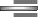

Fitting Functions to Data:
|
Return to Main Page
Index of On-Line Topics Exercises for This Topic Utility: On-Line Regression Utilty Everything for Calculus Everything for Finite Math Everything for Finite Math & Calculus |
We have often seen algebraically defined functions used to model relationships between variables. For example, a demand function expresses the demand for an item as a function of the unit price, and a cost function expresses total cost as a function of the number of items manufactured. (See the Topic Summary of Functions for some examples.) These functions are often called models.
In Chapter 1 of Calculus Applied to the Real World we see how to obtain a linear or exponential model from two data points: we only need to find the equation of the line or exponential curve passing through them. However, it often happens that we have many data points that don't quite all lie on one line or exponential curve. The problem then is to find the line, exponential curve, quadratic curve, or what have you coming closest to passing through all of the points. the relationship between price and demand, or cost. In this interactive module, we discuss how we can come up with such a model.
We start with an attempt to construct a linear demand function. Suppose that your market research of real estate investments reveals the following sales figures for new homes of different prices over the past year.
| Price (Thousands of $) | $150 - $169 | $170 - $189 | $190 - $209 | $210 - $229 | $230 - $249 | $250 - $269 | $270 - $289 |
| Sales of New Homes This Year | 126 | 103 | 82 | 75 | 82 | 40 | 20 |
If we simplify the situation by replacing each of the price ranges by a single price in the middle of the range, we get the following table:
| Price (Thousands of $) | $160 | $180 | $200 | $220 | $240 | $260 | $280 |
| Sales of New Homes This Year | 126 | 103 | 82 | 75 | 82 | 40 | 20 |
We would like to use these data to construct a demand function for the real estate market. (Recall that a demand function gives demand y, measured here by annual sales, as a function of unit price, x.) Here is a plot of y versus x.
The data definitely suggest a straight line, more-or-less, and hence a linear relationship between p and q. Here are several possible "straight line fits."
Q Which line best fits the data?
A We would like the sales predicted by the best-fit line (predicted values) to be as close to the actual sales (observed values)as
possible. The differences between the predicted values and the observed
values appear as the vertical distances shown in the figure below.
Q Since we want the vertical
distances to be as small as possible, why can't we set them all to zero
and solve for the slope and intercept of the straight line?
A If this were possible,
then there would be a straight line that passes through all the data
points. A look at the graph shows that this is not the case.
Q Then why not find the line that minimizes all the vertical distances?
A This is not possible
either. The line that minimizes the first two distances is the line
that passes through the first two data points, since it makes the
distances 0. But this line certainly does not minimize the distance to
the third point. In other words, there is a trade-off: making some
distances smaller makes others larger.
Q So what do we do?
A Since we cannot minimize all
of the distances, we minimize some reasonable combination of them. Now,
one reasonable combination of the distances would be their sum,
but that turns out the be difficult to work with (because distances are
measured in terms of absolute values). Instead, we use the sum of the squares of the distances (no absolute values required). The line that minimizes this sum is called the best fit line, regression line, or least squares line associated with the given data.
Q How do we obtain the equation of the best fit line?
A Following is the formula
for the best fit straight line. To justify it requires some calculus.
If you know about partial derivatives, consult the chapter on the
calculus of several variables in Calculus Applied to the Real World for a detailed explanation.
|
Regression (Best Fit) Line
The best fit line associated with the n points (x1, y1), (x2, y2), . . . , (xn, yn) has the form
x = sum of x-values = x1 + x2 + . . . + xn y = sum of y-values = y1 + y2 + . . . + yn x2 = sum of squares of x-values = x12 + x22+ . . . + xn2 |
Using the formula above is easy, as the following example shows.
 Example 1 Computing a Regression Line by Hand
Find the least squares line associated with the following data:
| x | 1 | 2 | 3 | 4 |
| y | 1.5 | 1.6 | 2.1 | 3.0 |
Solution In order to apply the formula, it is best to organize the data in a table as shown.
To complete the table, do the following:
Substituting the correct values from the above table into the formula gives
| slope = m | = |
|
= | 4(30) - 102 |
= | 0.5 |
| intercept = b | = |
|
= | 4 |
= | 0.8 |
Thus our least squares line is
Before we go on... Here is a plot the data points and the least squares line.
Notice that the line doesn't pass through even one of the original points, and yet it is the straight line that best approximates them.
Let us now return to the data on demand for real estate with which we began this topic.
Example 2 Demand for Homes
Find a linear demand equation that best fits the following data, and use it to predict annual sales of homes priced at $140,000.
| x = Price (Thousands of $) | $160 | $180 | $200 | $220 | $240 | $260 | $280 |
| y = Sales of New Homes This Year | 126 | 103 | 82 | 75 | 82 | 40 | 20 |
Solution Here is the table we use to organize the calculations.
| x | y | xy | x2 | |
| 160 | 126 | 20,160 | 25,600 | |
| 180 | 103 | 18,540 | 32,400 | |
| 200 | 82 | 16,400 | 40,000 | |
| 220 | 75 | 16,500 | 48,400 | |
| 240 | 82 | 19,680 | 57,600 | |
| 260 | 40 | 10,400 | 67,600 | |
| 280 | 20 | 5,600 | 78,400 | |
| Sums | x = 1,540 | y = 528 | xy = 107,280 | x2 = 350,000 |
Substituting these values in the formula gives (n = 7)
| slope = m | = |
|
= | 7(350,000) - 1,5402 |
-0.7929 |
| intercept = b | = |
|
= | 7 |
249.9 |
Notice that we used the most accurate value, m = -0.7928571429, that we could obtain on our calculator in the formula for b rather than the rounded value -0.7929. This illustrates the following important general guideline:
Thus our least squares line is
We can now use this equation to predict the annual sales of homes priced at $140,000, as we were asked to do. Remembering that x is the price in thousands of dollars, we set x = 140, and solve for y, getting y 139. Thus our model predicts that approximately 139 homes will have been sold in the range $140,000-$159,000.
Before we go on... We must remember that these figures were for sales in a range of prices. For instance, it would be extremely unlikely that 139 homes would have been sold at exactly $140,000. On the other hand, it does predict that, were we to place 139 homes on the market at $140,000, we could expect to sell them all
Here is the original data, together with the least squares line.
Q If the given data points all happen to lie on a straight line, is this the line we get by the best fit method?
A Yes. This has the
following implication: you can use linear regression on a graphing
calculator to check your calculations of the equation of a straight
line passing through two specified points.
Q If the given points
do not lie on a straight line, is there a way we can tell how far off
they are from lying on a straight line?
A There is a way of
measuring the "goodness of fit" of the least squares line, called the
coefficient of correlation. This is a number r between -1 and 1. the
closer it is to -1 or 1, the better the fit. For an exact fit, we would
have r = -1 (for a negative slope line) or r = 1 (for a positive slope
line). For a bad fit, we would have r close to 0. The figure below
shows several collections of data points with best-fit lines and
corresponding values of r.
The correlation coefficient can be calculated with the following formula. (To justify this formula requires a fair knowledge of statistics, so we shall not attempt to do so here.)
| Coefficient of Correlation
|
Q Now we know how to fit a straight line to given data. What about an exponential curve, of the form
Start with the exponential function
and take the logarithm of both sides:
The properties of logarithms give
This expresses log(q) as a linear function of t, with
Therefore, if we find the best-fit line using log(q) as a function of t, the slope and intercept will be given as above, and so we can obtain r and A by
To summarize,
|
Exponential Regression
To obtain a best-fit exponential curve of the form
|
Revenues from sales of Compaq computers are shown in the following table, where x represents time in years since 1990.* Obtain an exponential regression model for the data.
| t = Year (1990 = 0) | 0 | 2 | 4 | 7 |
| R = Revenue ($ billion) | 3 | 4 | 11 | 25 |
* Data are rounded. Source: Company Reports/The New York Times, January 27, 1998, p. D1.
Solution Since we need to model log(R) as a linear function of t, we first make a table with x = t and y = log(R), and then calculate the regression line, y = mx + b.
| x (= t) | 0 | 2 | 4 | 7 |
| y (= log(R)) | 0.477121 | 0.602060 | 1.04139 | 1.39794 |
Instead of doing this calculation by hand as we did in the above examples, you can do it automatically using the on-line regression utility. Just enter the x- and y-values in the table, and press the "y = mx+b" button. (Yes, that utility does exponential regression as well, but we would like you to know how it works!)
The linear regression model we obtain is
Thus, the desired exponential model is
This gives our revenue model as
Before we go on... Go to the on-line regression utility, enter the original data (before you took the logarithms) and press the "y = a(b^x)" button. What do you find?
| y = ax2 + bx + c | Quadratic regression | |
| y = ax3 + bx2 + cx + d | Cubic regression |
On the TI-83, you will find all of these, as well as the following
| y = ax4 + bx3 + cx2 + dx + e | Quartic regression | |
| y = axb | Power regression | |
| y = asin(bx+c) + d | Sine regression |
|
Return to Main Page
Index of On-Line Topics Exercises for This Topic Utility: On-Line Regression Utilty Everything for Calculus Everything for Finite Math Everything for Finite Math & Calculus |